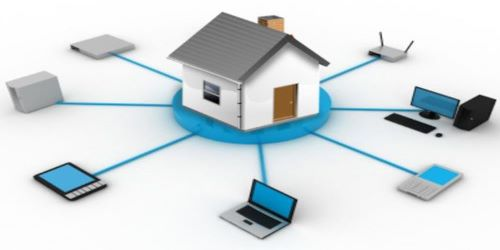
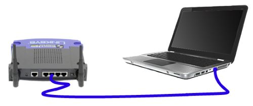
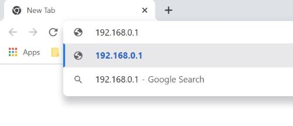
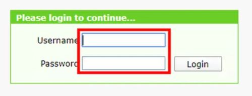
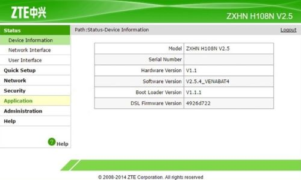
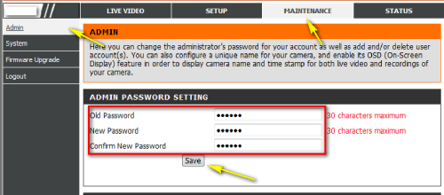

Cibersegurança 101
Dicas e orientações sobre Cibersegurança de fácil entendimento e acessíveis para todos
Proteção de sua rede doméstica

SITUAÇÃO
Você compra um novo roteador para sua residência e quer deixar sua rede o mais segura possível, sem ter que executar configurações muito complexas e técnicas.
PRINCIPAIS FRAGILIDADES
Os roteadores atuais possuem quatro configurações principais que irão diminuir muito o risco de invasão a sua rede.
– Alteração de login e senha de fábrica para acesso administrativo ao roteador.
– Configuração de rede Wireless para utilizar os protocolos mais seguros.
– Escolha de uma senha grande e complexa para acessar a rede Wireless.
– Desativação da função WPS do roteador.
ACESSO ADMINISTRATIVO AO ROTEADOR
Roteadores sempre vem configurados com um login e senha padrão de fábrica para acesso administrativo. Normalmente estas duas informações são iguais para todos os equipamentos do mesmo modelo/fabricante. Exemplo: Login "admin" e senha "admin" para roteadores da D-link. Por isso, um hacker apenas sabendo o modelo do seu roteador já consegue identificar o login e senha padrão, caso você não mude. E, assim pode acessar seu equipamento, comprometendo sua rede.
Todo roteador possui um meio que permite ao usuário acessa-lo e configura-lo. Para fazer essa configuração, ligue o roteador na tomada. Aguarde uns 3 minutos. Feito isso, utilize um cabo de rede do padrão RJ-45 para conectar o seu notebook/desktop ao roteador

No computador abra um navegador de sua preferência (Internet Explorer, Chrome, Firefox etc.) e digite o endereço de IP indicado para o roteador. Normalmente esse endereço de IP fica escrito numa etiqueta colada no próprio aparelho, mas pode estar descrito também no manual impresso que vem dentro da caixa.

Agora você estará diante da tela de login para administração do roteador. Novamente, as informações para login estarão disponíveis coladas no aparelho ou no manual impresso. Utilize-as para fazer o acesso.

Com acesso devidamente realizado ao equipamento, você verá diversas opções que irão variar bastante dependendo do modelo e fabricante do roteador que comprou. Navegue pelas opções (sem medo), buscando algo que remeta a alterar senha ou login padrão de administração. Caso tenha dificuldades de encontrar a opção, utilize, de novo, o manual impresso para descobrir onde se encontra o que procura.

Assumindo agora que você encontrou a opção para fazer esse modificação na conta de acesso administrativo, faça a alteração, primeiramente, da senha. Escolha uma senha forte e complexa. Em seguida, caso também seja possível, altere o nome de usuário (geralmente o nome padrão de fábrica é "admin"). Mude para algum nome que seja fácil de você se lembrar.

Pronto! A partir de agora voce pode usar essas novas credenciais (login e senha) para acessar o roteador no processo descrito acima.
Por Igor Buess - 08/05/2021
Voltar a página principal
Sobre o autor e esta página